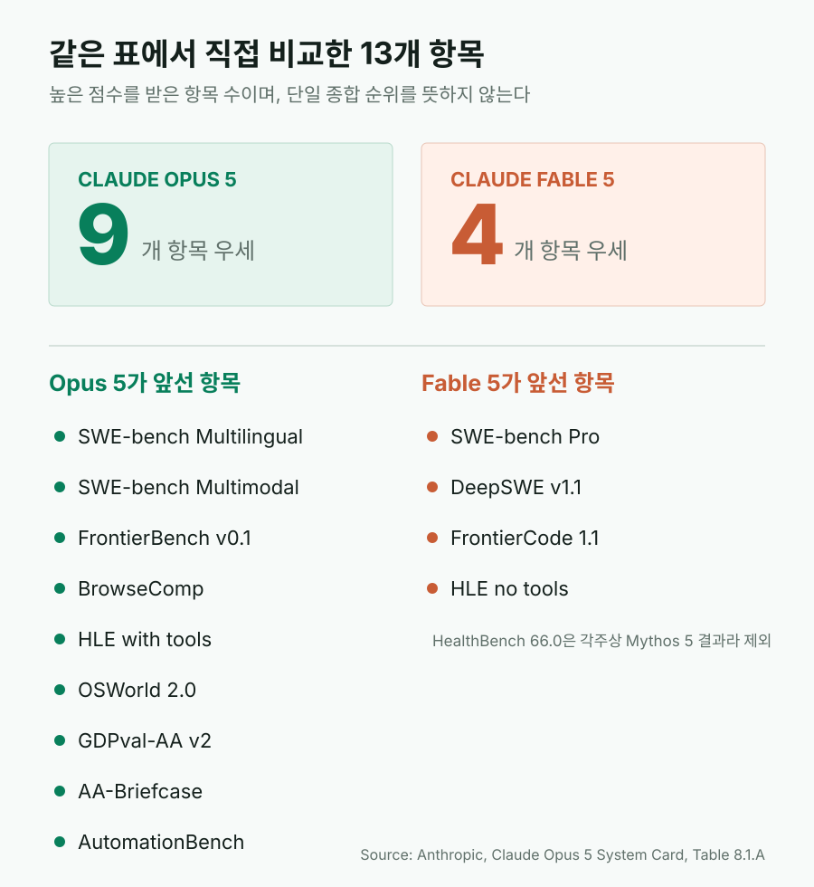
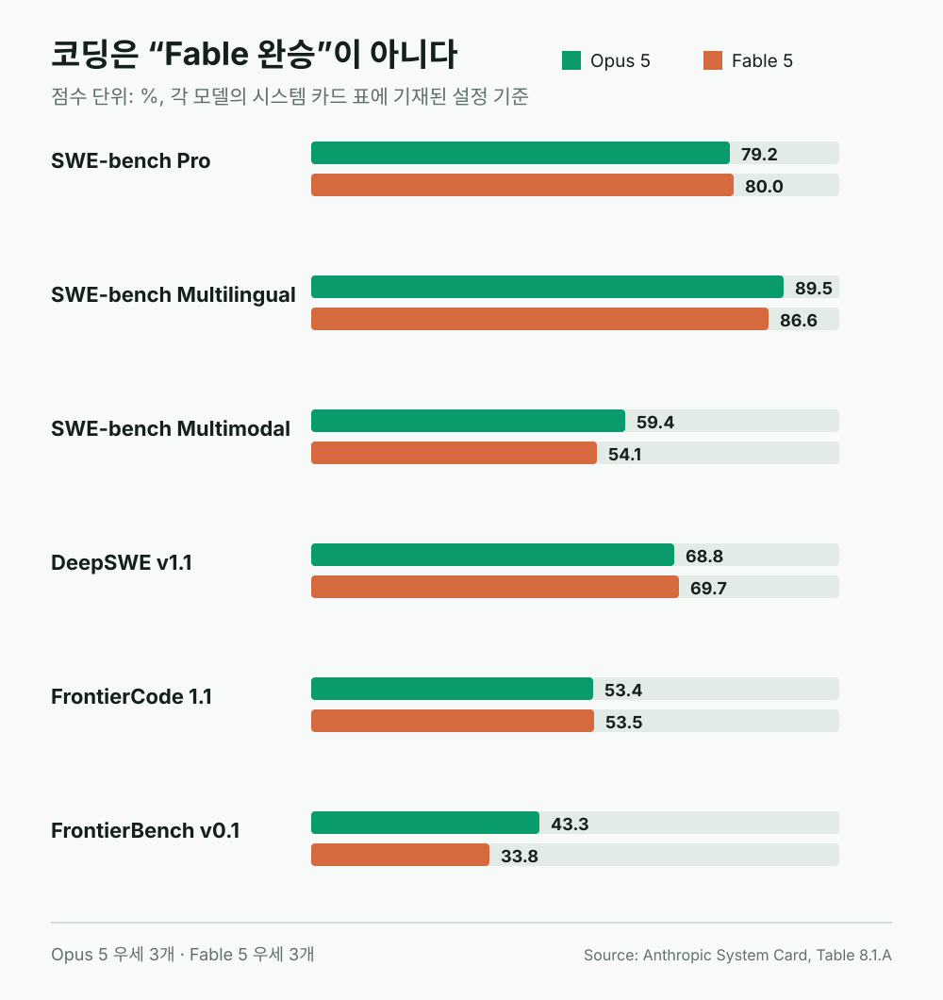
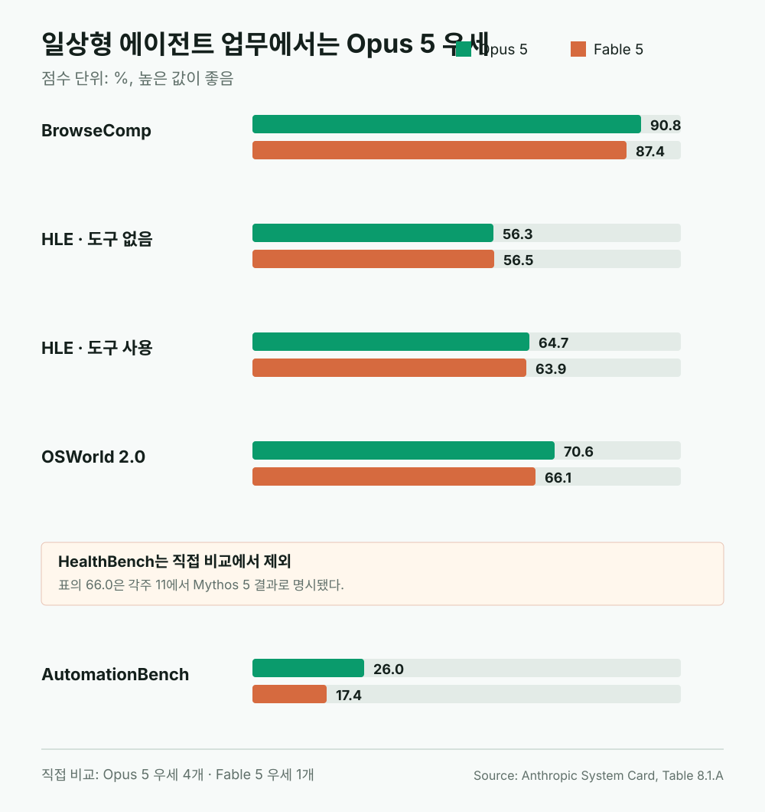
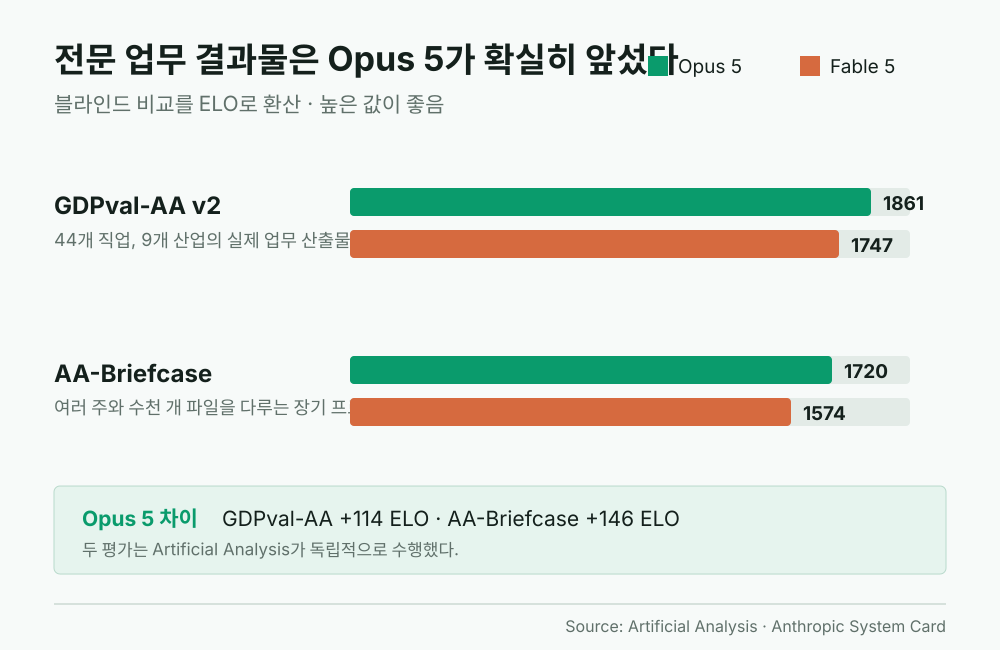
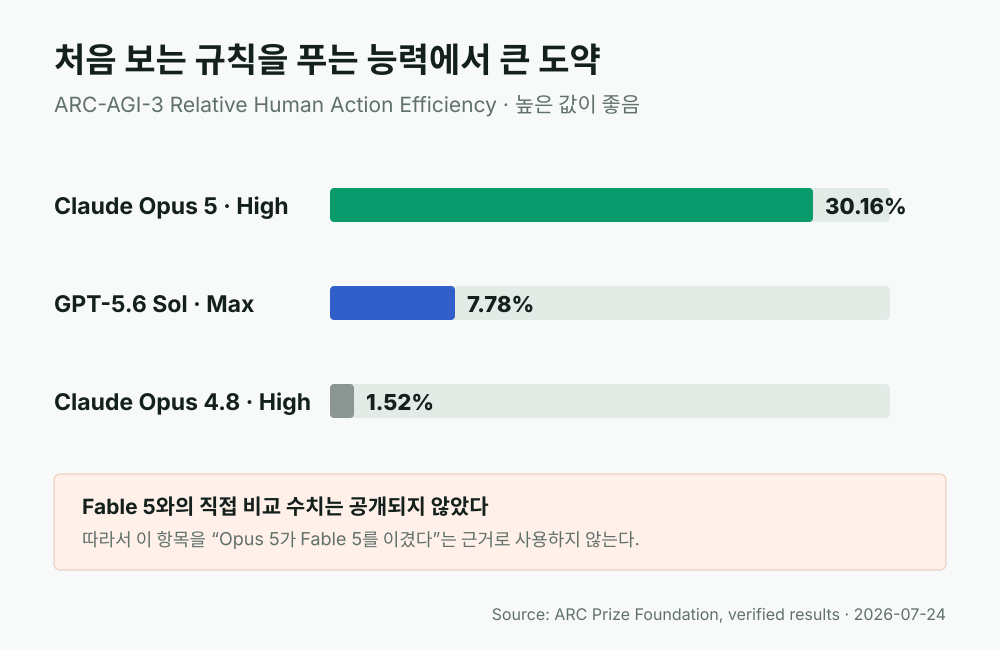
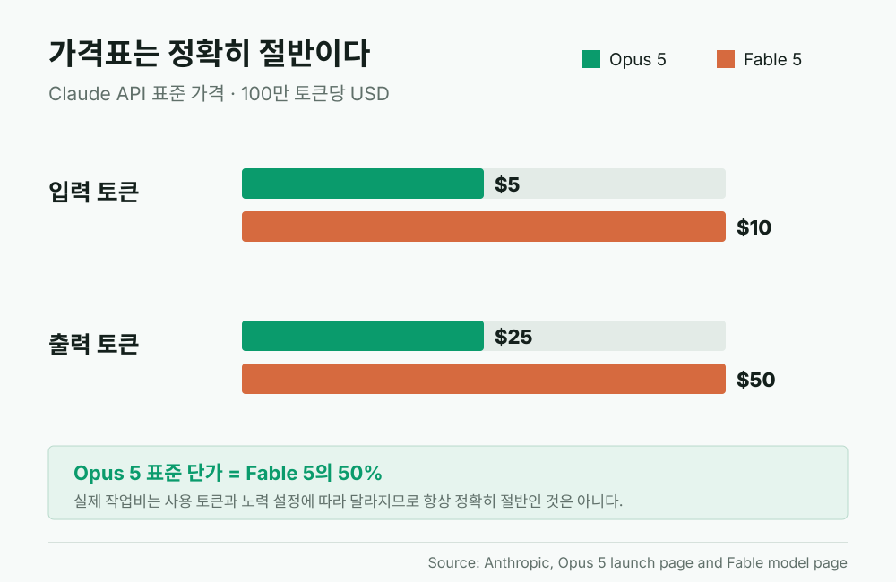

Claude Opus 5, Fable 5보다 강한 곳이 더 많다: 절반 가격의 역전
Anthropic은 Claude Opus 5를 “Fable 5의 최전선 지능에 가까우면서 가격은 절반인 모델”이라고 소개했다. 그런데 공개된 시스템 카드의 같은 표를 자세히 보면 표현이 지나치게 조심스럽다. 두 모델을 직접 비교할 수 있는 13개 항목 가운데 Opus 5가 9개에서 더 높다. 코딩, 웹 검색, 컴퓨터 조작, 실제 사무 자동화, 전문 업무 산출물처럼 일반 사용자가 체감하기 쉬운 영역에서는 Opus 5가 단순한 보급형 Fable이 아니라 새로운 기본 선택지에 가깝다.
Model Shift
Fable 5가 가장 강한 모델이라는 서열은 그대로지만, 대부분의 사용자는 Opus 5를 먼저 고르는 편이 합리적이다
Opus 5의 API 가격은 입력 100만 토큰당 5달러, 출력 100만 토큰당 25달러다. Fable 5의 10달러와 50달러에서 정확히 절반이다. 동시에 Opus 5는 전문 업무, 컴퓨터 사용, 웹 검색, 자동화, 일부 코딩 평가에서 Fable 5를 앞선다. 반면 Fable 5는 며칠씩 이어지는 고난도 비동기 작업과 일부 과학·사이버 능력에서 여전히 상위 모델로 남는다.

7월 24일, Opus 5가 Fable 5의 자리를 상당 부분 가져왔다
Anthropic은 2026년 7월 24일 Opus 5를 공개했다. 회사가 붙인 역할은 명확하다. 매일 쓰는 코딩과 지식 업무를 위한 모델이며 Claude Max의 새 기본 모델, Claude Pro에서 사용할 수 있는 가장 강한 모델이다. Claude.ai, Claude Code, Claude Cowork, API에서 동시에 제공되고 AWS도 같은 날 Amazon Bedrock 지원을 발표했다.
출시 보도 역시 성능 자체보다 효율과 제품 배치에 주목했다. Reuters는 Opus 5가 Fable 5에 가까운 능력을 절반 가격으로 제공하며, 일상 사무와 프로그래밍에 적합한 모델이라고 전했다. Bloomberg는 기업들이 AI 비용을 더 엄격하게 따지는 상황에서 Anthropic이 Opus 5를 일상 업무의 기본값으로 밀고 있다고 해석했다. Axios도 두 달이 채 안 되는 기간에 네 번째 Claude 5 모델이 나왔다는 점을 짚었다.
이런 설명만 읽으면 Opus 5가 Fable 5보다 한 단계 아래인 것처럼 보인다. 모델 이름의 위계도 Fable이 Opus 위에 있고, Anthropic은 여전히 Fable 5를 “가장 야심 차고 오래 걸리는 프로젝트”에 쓰라고 권한다. 하지만 일반 사용자에게 중요한 질문은 이름표가 아니라 실제 작업에서 어느 쪽이 더 잘 끝내는가다.
공식 표를 세어보면 Opus 5가 9 대 4로 앞선다
Anthropic의 Opus 5 시스템 카드 Table 8.1.A에는 Opus 5, Opus 4.8, Fable 5, GPT-5.6 Sol의 주요 평가 결과가 한 표에 정리돼 있다. 표 안에서 두 모델의 값이 모두 확인되는 항목을 직접 비교하면 13개다. 그중 Opus 5가 9개, Fable 5가 4개에서 높다.
Opus 5가 앞선 항목은 SWE-bench Multilingual, SWE-bench Multimodal, FrontierBench v0.1, BrowseComp, 도구를 사용한 Humanity's Last Exam, OSWorld 2.0, GDPval-AA v2, AA-Briefcase, AutomationBench다. Fable 5는 SWE-bench Pro, DeepSWE v1.1, FrontierCode 1.1, 도구 없는 Humanity's Last Exam에서 앞선다.
표의 HealthBench Professional 행에는 Fable 열 위치에 66.0이 적혀 있지만, 숫자에 붙은 각주 11은 이 결과가 Fable 5가 아니라 Mythos 5에서 나온 값이라고 밝힌다. 따라서 이 행을 Fable 5의 승리로 세면 안 된다. 아래 직접 비교 그래프에서도 해당 행을 제외했다.
다만 승리 항목 수만으로 모델의 절대적인 우열을 정하면 안 된다. 평가마다 난도와 목적, 실행 도구, 노력 설정, 비용이 다르다. 특히 FrontierCode는 53.4 대 53.5, 도구 없는 HLE는 56.3 대 56.5처럼 사실상 비슷한 결과도 있다. 이 표가 말해주는 핵심은 “Opus 5가 Fable 5의 값싼 하위 모델”이라는 단순한 설명이 맞지 않는다는 점이다.
코딩에서는 3 대 3, 하지만 Opus 5가 크게 이긴 항목이 있다
코딩 평가 여섯 개만 보면 두 모델은 세 항목씩 나눠 가진다. Fable 5는 SWE-bench Pro에서 80.0으로 Opus 5의 79.2를 근소하게 앞섰다. DeepSWE v1.1도 69.7 대 68.8, FrontierCode 1.1도 53.5 대 53.4로 Fable 5가 높다. 긴 코딩 작업이나 엄격한 패치 품질에서는 Fable의 강점이 남아 있다는 뜻이다.
반대로 Opus 5는 다국어 코드 수정에서 89.5 대 86.6, 화면과 디자인 정보를 함께 읽는 SWE-bench Multimodal에서 59.4 대 54.1로 앞선다. 가장 큰 차이는 과학·엔지니어링·터미널 작업을 섞은 FrontierBench v0.1이다. 시스템 카드 요약표에서는 Opus 5가 43.3, Fable 5가 33.8이다.

Anthropic이 별도로 실행한 FrontierBench에서는 Opus 5가 xhigh 노력에서 44.4%의 평균 보상을 기록했고, Fable 5는 max에서 33.7%였다. 이 평가는 74개의 어려운 터미널 과제로 구성된다. 계산생물학, 물리 시뮬레이션, CAD, 형식 증명, GPU 최적화처럼 단순 코드 완성보다 훨씬 복합적인 작업을 다룬다.
안전장치의 개입 차이도 실사용에 영향을 준다. 같은 FrontierBench 내부 실행에서 Opus 5의 안전 분류기는 API 호출의 5%, 전체 시도의 4%에서 작동했다. Fable 5는 API 호출의 42%, 전체 시도의 26%에서 Opus 4.8로 전환됐다. 회사는 Opus 5의 사이버 분류기가 Fable 5보다 약 85% 덜 개입할 것으로 예상한다고 밝혔다. 정상적인 디버깅이나 보안 코드 검토가 불필요하게 다른 모델로 넘어갈 가능성이 상대적으로 낮다는 의미다.
웹 검색, 컴퓨터 사용, 자동화에서는 Opus 5가 더 실용적이다
일반 사용자가 “일을 대신 시킨다”고 느끼는 영역에서는 Opus 5의 장점이 더 뚜렷하다. BrowseComp는 웹에서 찾기 어려운 정보를 수집하는 능력을 본다. Opus 5는 90.8, Fable 5는 87.4다. 도구를 사용한 Humanity's Last Exam에서는 64.7 대 63.9로 Opus 5가 근소하게 앞선다.
OSWorld 2.0은 모델이 실제 Ubuntu 가상 머신에서 마우스와 키보드를 사용해 업무를 끝내는지 평가한다. Opus 5는 70.6, Fable 5는 66.1이다. Anthropic은 공식 발표에서 Opus 5가 Fable 5의 최고 결과를 약 3분의 1 수준의 비용으로 넘어섰다고 설명했다. Claude가 문장을 잘 쓰는가보다 실제 화면을 조작해 결과를 남길 수 있는가를 보는 평가라는 점에서 체감과 가깝다.
AutomationBench의 차이는 더 크다. 시스템 카드 기준 Opus 5는 26.0%, Fable 5는 17.4%다. Zapier의 최신 공개 리더보드에서도 Opus 5 Max가 26.2%, Fable 5 Max가 17.4%로 표시된다. 이 평가는 CRM, Slack, Google Workspace 등 47개 앱을 흉내 낸 환경에서 수십 차례 API 호출을 연결하고, 마지막 시스템 상태가 정확한지를 검사한다. 답변이 그럴듯한지가 아니라 실제 데이터가 제대로 바뀌었는지를 본다.

여기서도 Fable 5가 모두 밀리는 것은 아니다. 도구를 쓰지 않는 HLE는 Fable 5가 56.5, Opus 5가 56.3으로 거의 같다. 반면 HealthBench Professional의 66.0은 Fable 5의 점수가 아니므로 두 모델의 의료 전문 질문 능력을 이 표만으로 단정할 수 없다. 제품 등급에 기대어 빈칸을 추정하기보다, 모델명이 확인된 수치만 비교하는 편이 정확하다.
문서, 슬라이드, 표를 만드는 전문 업무에서도 Opus 5가 1위다
GDPval-AA v2는 44개 직업과 9개 산업에서 실제로 나올 법한 업무 산출물을 만든 뒤, 결과를 블라인드로 비교해 ELO로 환산한다. 문서, 슬라이드, 도표, 스프레드시트를 포함하기 때문에 단답형 시험과 다르다. Opus 5 Max는 1861 ELO로 1위, xhigh는 1827로 2위다. Fable 5 Max는 1747이다.
AA-Briefcase는 더 긴 프로젝트를 본다. 여러 주에 걸친 복잡한 과제, 연결된 여러 작업, 수천 개의 입력 파일을 다루고 결과의 정확성뿐 아니라 분석과 표현 품질을 함께 평가한다. Opus 5 Max는 1720, Fable 5는 1574다. 이 두 평가는 Anthropic 내부 점수가 아니라 Artificial Analysis가 독립적으로 실행했다는 점도 중요하다.

이 결과는 블로그 작성, 자료 조사, 보고서 제작, 긴 문서 검토 같은 작업에서 특히 의미가 있다. 모델의 가장 위험하고 희귀한 능력보다, 자료를 모으고 구조화하고 파일 형태로 완성하는 능력이 실제 생산성을 좌우하기 때문이다. Bloomberg와 Fortune이 Opus 5를 기업의 일상 업무 모델로 해석한 배경도 여기에 있다.
ARC-AGI-3의 30.16%는 강력하지만 Fable과의 비교에는 쓰면 안 된다
Opus 5 출시에서 가장 눈에 띄는 숫자는 ARC-AGI-3의 30.16%다. ARC-AGI-3는 규칙과 목표를 알려주지 않은 새로운 환경에서 모델이 시행착오를 통해 작동 방식을 알아내도록 만든 평가다. ARC Prize Foundation의 검증 결과에서 Opus 5 High는 30.16%, GPT-5.6 Sol Max는 7.78%, Opus 4.8 High는 1.52%다.
하지만 이 결과를 “Opus 5가 Fable 5보다 네 배 강하다”고 쓰면 틀린다. Fable 5의 ARC-AGI-3 점수는 공식 비교표에 없기 때문이다. Opus 5의 새로운 문제 해결 능력이 크게 뛰었다는 근거로는 쓸 수 있지만, Fable 5와의 직접 승패 근거로 사용해서는 안 된다.

가격은 절반이지만 실제 청구액이 언제나 정확히 절반은 아니다
Opus 5의 표준 API 가격은 입력 100만 토큰당 5달러, 출력 100만 토큰당 25달러다. Fable 5는 각각 10달러와 50달러다. 같은 양의 입력과 출력을 처리한다면 Opus 5가 정확히 절반이다. 기존 Opus 4.8과 가격이 같아서, 이전 Opus 사용자는 단가를 올리지 않고 더 높은 성능을 얻는다.
다만 “토큰 가격 절반”과 “작업비 절반”은 같은 말이 아니다. 모델이 더 많은 추론 토큰을 쓰거나 더 긴 출력을 만들면 실제 절감폭은 달라진다. Opus 5에는 low, medium, high, xhigh, max 노력 설정이 있고, 설정에 따라 작업당 토큰 사용량이 크게 움직인다. 따라서 비용은 모델 이름만이 아니라 노력 수준과 반복 횟수까지 함께 봐야 한다.

Opus 5 Fast mode는 기본 속도의 약 2.5배로 동작하지만 가격은 기본 Opus 5의 두 배다. 결과적으로 입력 10달러, 출력 50달러 수준이 되어 Fable 5의 표준 단가와 같아진다. 속도가 급하지 않다면 기본 모드와 노력 설정을 먼저 조정하는 편이 비용 관리에 유리하다.
그렇다면 Fable 5는 왜 남아 있나
Fable 5의 역할은 가장 어렵고 오래 걸리는 작업이다. Anthropic은 Fable 5를 며칠 동안 계획하고, 하위 에이전트에 일을 나누고, 스스로 검증하는 장기 비동기 프로젝트용으로 설명한다. Reuters 인터뷰에서도 Anthropic 제품 책임자는 가성비에는 Opus 5, 며칠짜리 고자율 프로젝트에는 Fable 5를 고르라고 말했다.
위험한 이중용도 능력도 차이가 난다. Opus 5는 소프트웨어 취약점을 찾는 능력에서는 Mythos 5에 가까워졌지만, 그 취약점을 실제 공격 코드로 발전시키는 능력은 크게 뒤진다고 Anthropic은 밝혔다. Fable과 Mythos 계열은 공격적 사이버보안과 장기 생물학 연구에서 더 강하기 때문에 더 엄격한 안전장치와 접근 제한을 받는다.
Fable 5가 일부 긴 코딩 평가에서 앞선다는 사실도 무시할 수 없다. 아주 어려운 한 번의 연구, 며칠간의 자율 실행, 특정 고난도 과학·보안 작업에서는 Fable의 높은 비용이 정당화될 수 있다. 하지만 짧은 질문부터 코딩, 조사, 문서 제작까지 매일 반복하는 사용자가 모든 작업을 Fable 5로 처리할 이유는 줄었다.
Fable 5 크레딧 사용자에게는 더 중요한 변화다
Fable 5는 7월 초 구독 한도에 포함되는 기간이 끝난 뒤 사용 크레딧 방식으로 이동했다. 카드와 자동충전이 연결된 계정에서 Fable 5를 계속 쓰면 구독 한도 밖의 종량제 비용이 발생할 수 있다. 이전 글에서 지적했듯이, 무료 프로모션 크레딧을 받았다는 사실과 종량제 사용 경로가 켜지는 것은 별개의 문제다.
Opus 5의 등장은 이 비용 문제에 현실적인 대안을 준다. 동일한 작업에서 Opus 5가 더 높은 점수를 내는 영역이 많고 기본 단가는 절반이다. Fable 5가 반드시 필요한 작업이 아니라면 사용 크레딧을 켜 둔 채 계속 Fable을 돌리는 것보다 Opus 5로 먼저 시도하는 편이 안전하다.
실제 사용 전략은 간단하다. 기본 모델은 Opus 5로 두고, 노력 수준은 medium이나 high에서 시작한다. 결과가 부족한 어려운 코딩이나 장기 연구만 xhigh 또는 max로 올린다. 그래도 해결되지 않고 며칠짜리 자율 작업이 필요한 경우에 Fable 5를 선택한다. 이 순서라면 성능을 크게 포기하지 않으면서 비용 폭주 위험을 낮출 수 있다.
회사 발표를 그대로 믿기 전에 봐야 할 한계
벤치마크의 상당수는 Anthropic이 선택하고 실행한 결과다. 시스템 카드는 각 평가의 조건과 각주를 공개하지만, 모델 회사는 당연히 신제품이 잘 보이는 항목을 앞에 배치한다. FrontierBench 일부 실행에서는 안전 분류기가 요청을 Opus 4.8로 넘겼기 때문에, 결과가 순수한 단일 모델 성능만을 나타내지 않는다는 각주도 있다.
독립 평가라고 해도 모든 실사용을 대신하지 못한다. Artificial Analysis의 GDPval-AA와 AA-Briefcase는 실제 업무에 가까운 장점이 있지만, 특정 에이전트 실행 환경과 평가 방식의 영향을 받는다. Zapier AutomationBench도 엄격한 상태 검사를 사용해 현실적이지만, 26%라는 최고 점수 자체가 아직 대부분의 작업을 완전히 끝내지 못한다는 뜻이기도 하다.
사용자 평가에서는 문체, 과도한 설명, 토큰 사용량, 작업 중 방향 이탈 같은 불만도 나올 수 있다. 실제 저장소와 문서로 같은 과제를 여러 번 실행해 성공률, 수정 횟수, 최종 비용을 비교하는 것이 가장 정확하다. 벤치마크는 모델을 고르는 출발점이지 결과 보증서가 아니다.
결론: Fable 5의 아래가 아니라, 다른 목적의 새 주력 모델
Opus 5를 “Fable 5에 거의 근접한 절반 가격 모델”이라고만 부르면 중요한 변화가 가려진다. 공식 시스템 카드에서 모델명이 확인되는 13개 직접 비교 항목 중 9개에서 Opus 5가 앞섰고, 특히 웹 검색, 컴퓨터 사용, 사무 자동화, 전문 업무 산출물처럼 매일 쓰는 영역에서 우세했다. Fable 5가 상위 등급이라는 제품 서열과 실제 작업별 성능 서열이 더 이상 일치하지 않는다.
따라서 대부분의 Claude 유료 사용자는 Opus 5를 먼저 선택하는 편이 맞다. Fable 5는 가장 어려운 장기 자율 작업을 위한 특수 카드로 남겨두고, 일상 코딩과 조사, 문서·표·슬라이드 제작은 Opus 5로 시작하면 된다. 이번 출시의 핵심은 Anthropic이 더 강한 모델을 하나 추가했다는 데 있지 않다. 얼마 전까지 최고가 모델이 필요했던 많은 작업을 절반 단가의 기본 모델로 내려보냈다는 데 있다.
시각 자료와 저작권
이 글의 그래프 6개는 Anthropic 시스템 카드와 각 평가기관이 공개한 수치를 바탕으로 직접 제작한 SVG다. 언론사 사진, 유료 차트, Anthropic 홍보 이미지는 복제하지 않았다. 각 그래프의 수치 출처와 재구성 여부는 해당 캡션에 표시했다.
출처 링크
- Anthropic: Introducing Claude Opus 5
- Anthropic: Claude Opus 5 System Card
- Anthropic: Claude Fable 5 model page
- Anthropic: Redeploying Claude Fable 5
- Reuters: Anthropic rolls out Opus 5 in efficiency upgrade
- Bloomberg: Anthropic unveils a more cost-efficient model for everyday tasks
- Axios: Anthropic releases new model, Opus 5
- Fortune: Claude Opus 5 balances cost and capability
- Artificial Analysis: GDPval-AA v2 leaderboard
- Zapier: AutomationBench leaderboard
- ARC Prize Foundation: Claude Opus 5 verified results
- AWS: Claude Opus 5 now available on Amazon Bedrock